UVM Cycling Team
Raced at the collegiate level with the UVM Cycling Team, developing race craft in competitive US university racing.
Racing with WATT Cycling Club. Analyzing data at Paris Dauphine-PSL. Hosting Radio Fringale. Building tools that bridge sport, science & storytelling.
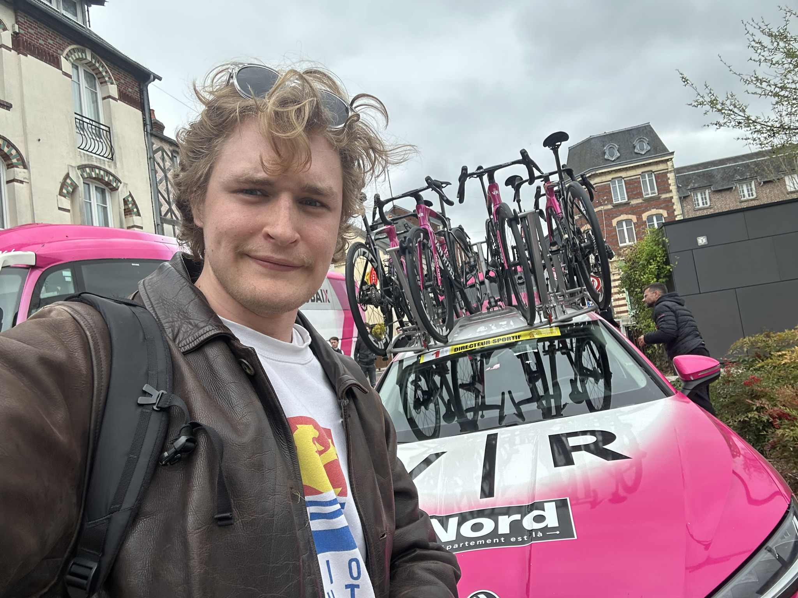
I'm Loïc Lebrec — a cyclist, data researcher, and cycling journalist based in Paris. I race club-level competitions with WATT Cycling Club, one of the most progressive clubs in France championing gender diversity in the peloton.
My academic work sits at Paris Dauphine-PSL, where I focus on data analysis and research — from energy forecasting models to health-tech product development. I speak six languages, opening doors to international collaborations with brands, riders, and research teams across Europe.
I co-host Radio Fringale, a cycling podcast covering pro racing with depth, passion, and a Franche-Comté twist. And I built Coach Center, a data-driven training app for cyclists who want to train smarter.
Covering the biggest races in person — on-the-ground reporting, rider interviews, and behind-the-scenes access for Radio Fringale.
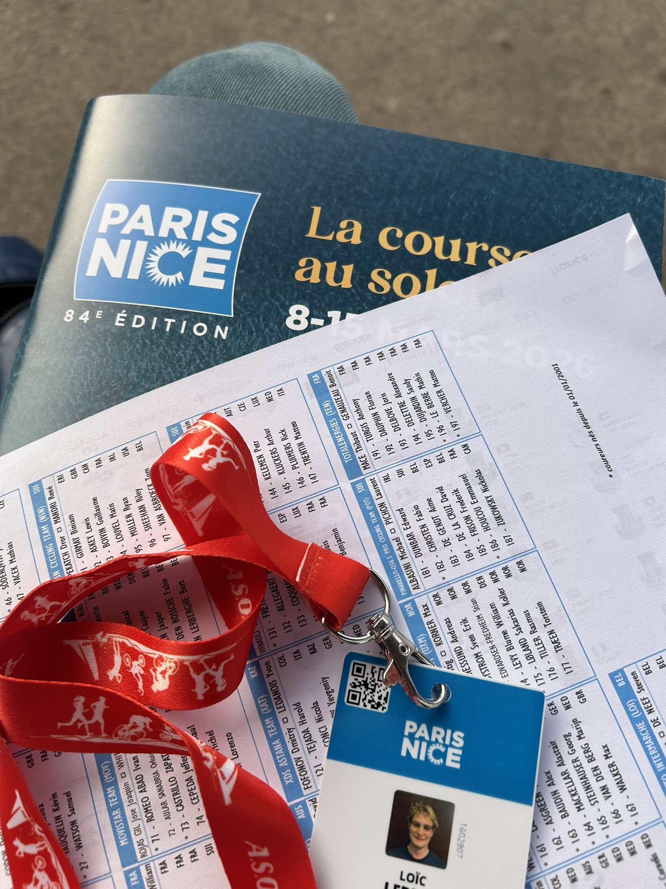
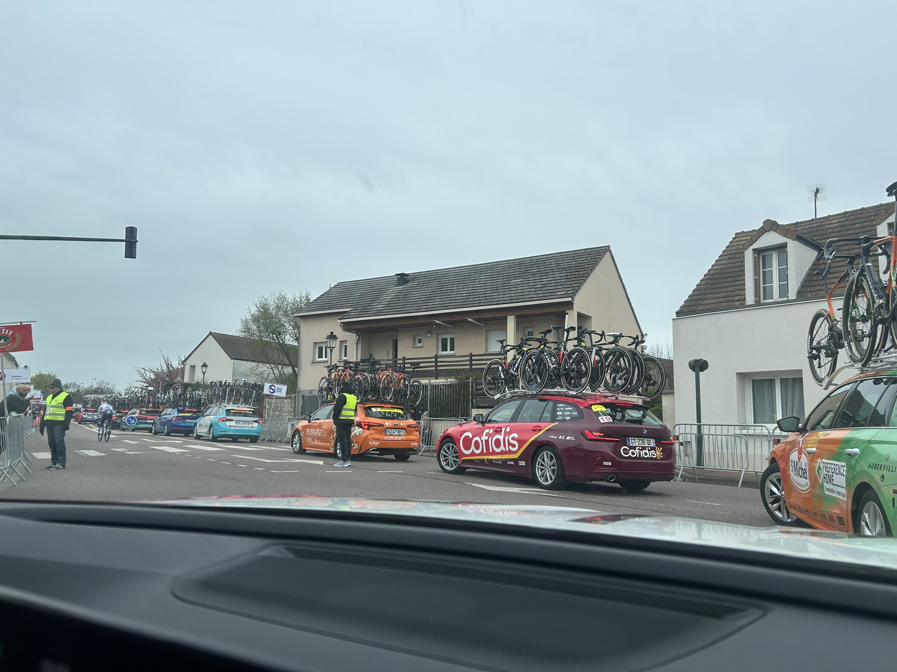

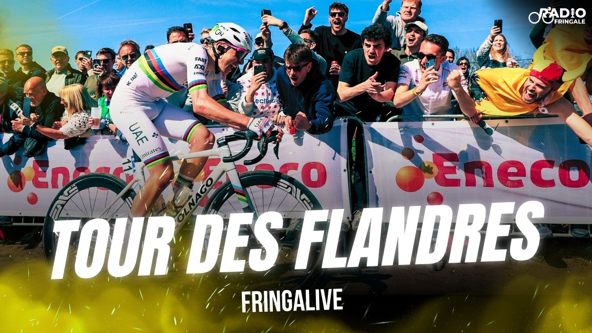
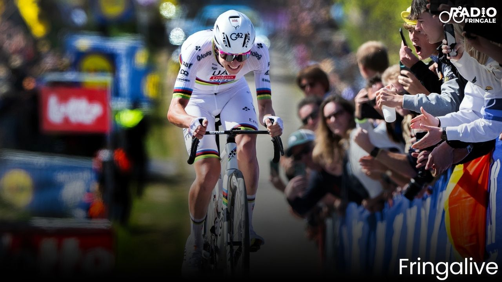
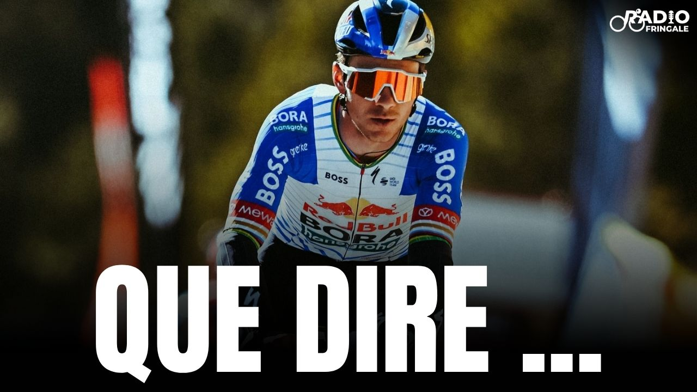
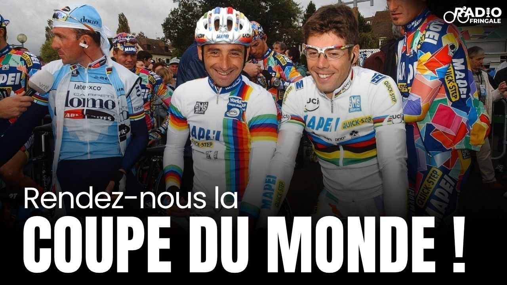
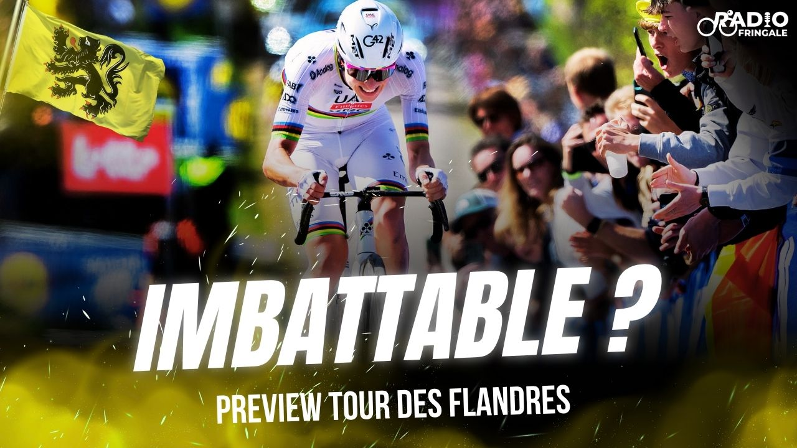
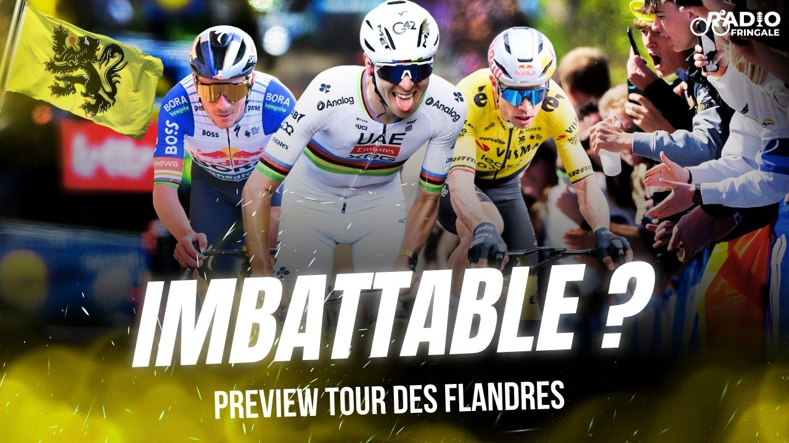
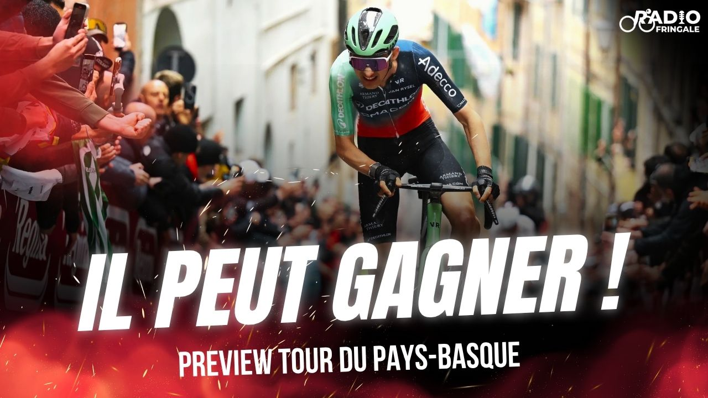
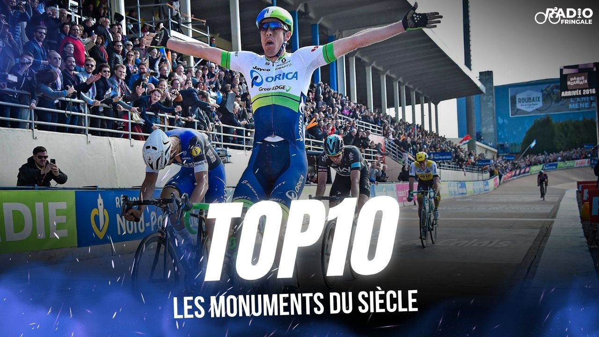
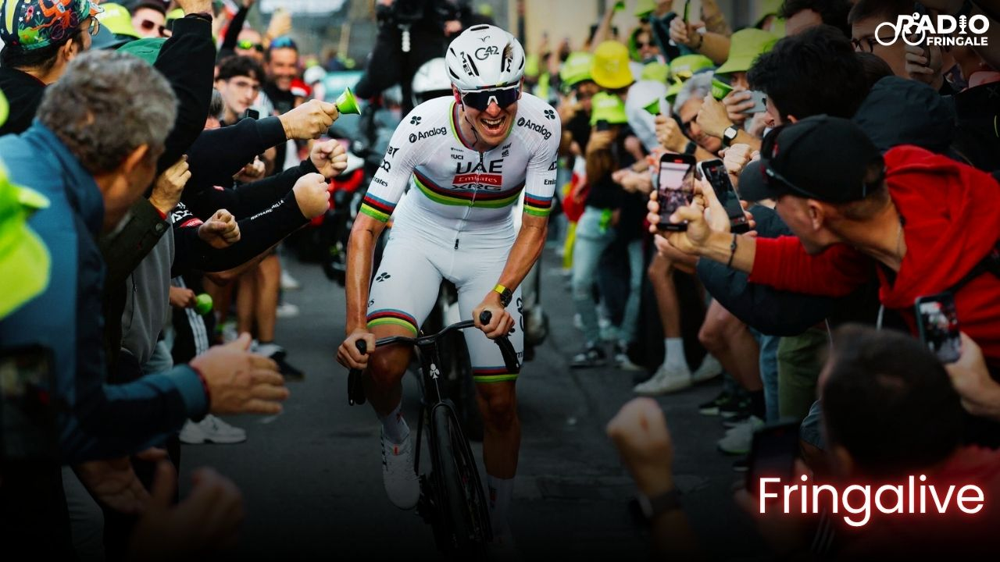
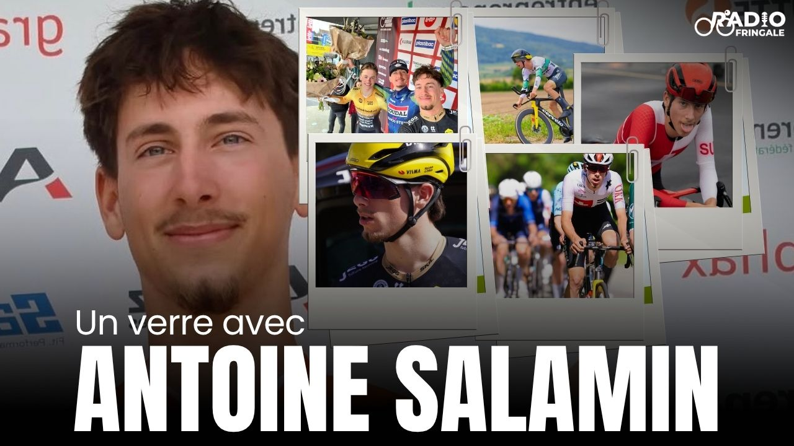
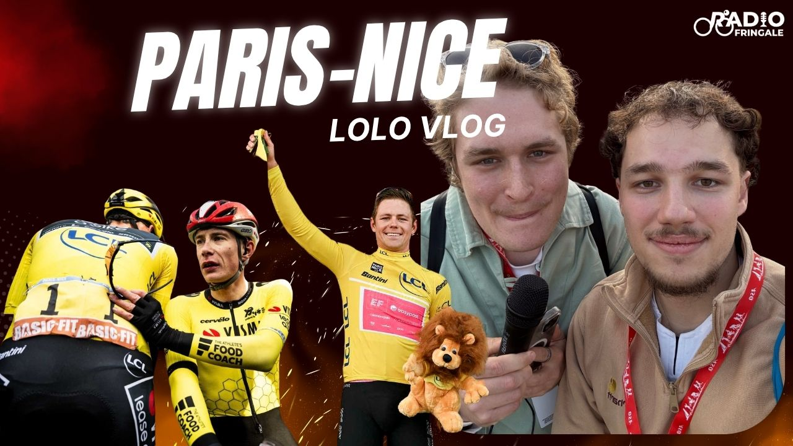
For collaborations, sponsor integrations, guest appearances, and race-day coverage partnerships, the Radio Fringale media kit includes audience profile, editorial formats, production capabilities, and contact details.
Raced at the collegiate level with the UVM Cycling Team, developing race craft in competitive US university racing.
Raced at French national level with Nantes NDVS, competing in high-level domestic events and elite race programs.
Currently racing with WATT Cycling and staying active in FFC competition throughout the season.
Worked with ASO as a journalist and had race-day access in the Van Rysel Roubaix team car for behind-the-scenes coverage.
I have been an athlete manager on the CX European race tour, coordinating athlete support and race logistics across multiple events and countries. I supported them on nutrition, language barriers and helping with their mechanical needs. I provided logistical support for each event. Together with the athleets we build race progams at elite amateur level and pro level. Speaking 6 languages fluently helped a lot on hectic race days.
Looking for a rider, analyst, podcast collaborator, or brand partner?